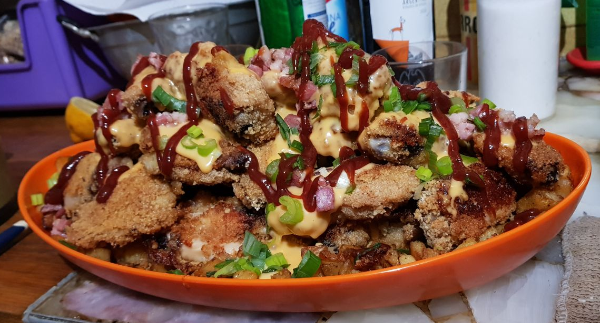

Home Made Chicken Wings

This is my favorite recipe.
My mother used to cook chicken wings when we were kids, and I continue cooking them because they taste so good, and it's so easy to make!
You can cook them if you are an expert in the kitchen, or if you are a rookie that never cooked anything without burning it.
Ingredients
For the chicken wings:
- chicken wings 2kg (or the amount according how much you eat. I eat a lot and I like it when I have leftovers for the next day!)
- eggs 2
- bread crumbs 1/2 kg
- cooking oil
For the seasoning:
- salt
- pepper
- paprika
- garlic
- parsley
- cheddar
- BBQ sauce
- bacon
- onion
Steps:
- Clean the chicken wings: take off undesired skin, hairs or little feathers. Then, add salt and pepper. Now we have the wings ready for the next step!
- In a bowl, put the eggs and add salt, garlic and parsley. Mix everything together. Plunge each wing in the eggs, and in another bowl, pour the bread crumbs, and plunge the wing there until it is fully covered. You can press it with your hands so the bread crumbs get really stick to the wing.
- Repeat the step 2 with all the wings, and in the meantime, place them in a baking tray. You need to get it ready by adding cooking oil and paprika all mixed up.
- Once you have all the wings ready in the tray with oil and paprika, cook them in the oven 15 min per side.
- Once they are cooked, spread some cheddar, BBQ sauce, onions, and crisped bacon all over them.